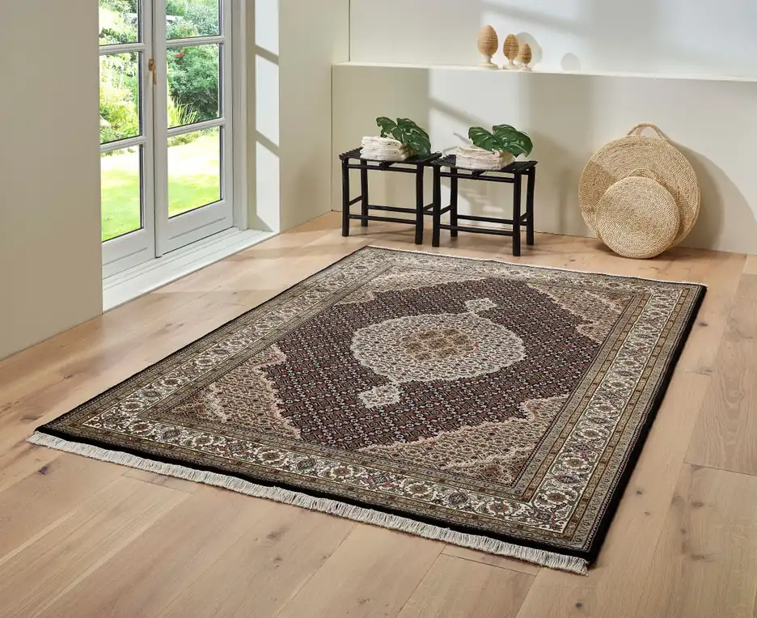
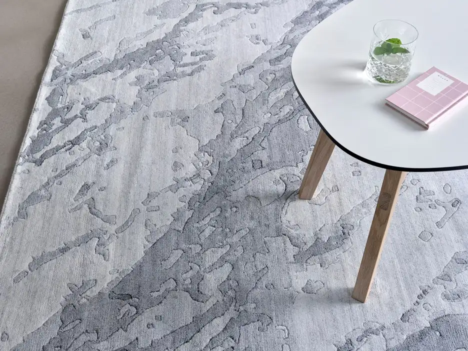

Tepper
Hvert teppe er ett eksemplar.
Vi velger ut tepper for hånd. Størrelser, farger og mønstre varierer — det som er inne, er det som finnes.
Persiske tepper
Håndknyttede tepper fra Iran, med tett knuting og dype plantefarger. Klassiske medailloner, blomstermønstre og rolige fargeflater.
- 01TabrizPresist knyttet, ofte med medaillon.
- 02KashanMyke farger og klassiske mønstre.
- 03NainFint knyttet, med silkeinnslag.


Persisk
Klassisk
Tett knuting, dype farger.
Orientalsk
Tabriz royal
Medaillon og rolige flater.

Vintage
Patchwork
Eldre tepper, nytt liv.
Størrelse
Mål rommet
Ta mål før du velger. Vi hjelper deg vurdere hva som passer.
Stell
Råd for hjemmet
Riktig underlag, jevnlig støvsuging og fagmessig vask når det trengs.